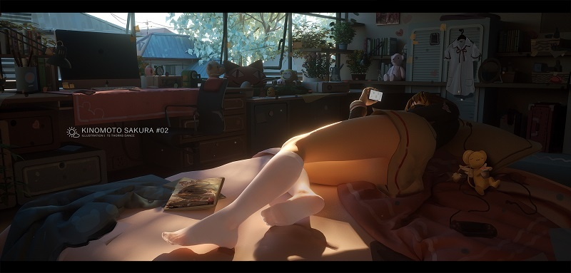

今天就是3月的最后一天了，又可以说一句四月你好，三月再见，
四月是你的谎言什么的，第1天就是愚人节，马上就要清明了，比如说明天不上班，清明要加班什么的。
这期的壁纸一共是40张，如果喜欢的话，就请加入壁纸文件夹。
继续阅读
琉璃神社壁纸包 2018年3月号 [40P]
22
今天就是3月的最后一天了，又可以说一句四月你好，三月再见，
四月是你的谎言什么的，第1天就是愚人节，马上就要清明了，比如说明天不上班，清明要加班什么的。
这期的壁纸一共是40张，如果喜欢的话，就请加入壁纸文件夹。
继续阅读
我的读者可能都是没有经验的Male Virgin！—— 冈本伦
大家好，观察君我又来了！这个系列的第二篇车评，漫画作品的定位不同，服务的读者群体也不同，我在第1篇文章里面提及到如月、水龙敬、新堂老师和部分漫画作品，每个人的偏好不同，笔下的作品会随着作者的性格、喜好、能力、影响而变化。接下来观察君我的第二篇文章，将会推荐两位漫画家，依旧是纯爱题材的作品，没有NTR请放心，而且实用性极高。 继续阅读
人越活下去难度会越高的！难度会越来越高的！—— 松冈祯丞 继续阅读
由于忘记了2月只有28天，所以忘记了收集壁纸的时间，今天补上。
一般向的精美壁纸，喜欢可以保存到壁纸文件夹，循环显示。
继续阅读
各位注意网站网址，谨防盗版，正版盗版之间的区别在于正版神社的右侧有登陆选项，用户评论的头像各不相同，没有顶部广告图片轮播，也不会出现点开帖子，在帖子上方设有广告，而盗版则是与之相反的，最最重要的就是盗版并没有我的存在。
大家新年快乐，终于到了等待一年的除夕夜了，昨天不知道各位有没有和另一半共同度过，反正我是一个人过了_(:з」∠)_，年底是真鸡儿事多，忙忙碌碌地就不知不觉来到了年30了，今天要更新一波帖子，即使是年30了，鸡儿也不能放假
被DNS污染了，所以换了新域名_(:з」∠)_（点开帖子即可知道网址，各位观众老爷们请及时更换收藏夹以及在无法访问时请尝试翻墙跳转访问） 继续阅读

2018年的第1个壁纸包，喜欢的话就收藏一下吧。
下个月大家都应该可以回老家了
现在进入2018年了，大家元旦快乐啊，新年快乐就留到2月的除夕时候吧。
网站如果打不开，请尝试使用https安全模式。
2017年的最后一天，这也是今年的最后一贴，一定要最完成，不然就拖到明年了，哈哈。
这一年来发生了很多事情，希望大家都没有留下遗憾，继续向新的一年发起挑战吧。
在这里先和大家说一声新年快乐！
继续阅读

月底的壁纸如期而来，大家最近都开始怀念过去了么？
看评论好像都很伤感的样子。
其实我感觉，人都会长大的，保持平常心的确很重要，以前是一个人看里番，现在你可以带着女朋友一起看里番。 继续阅读